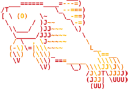
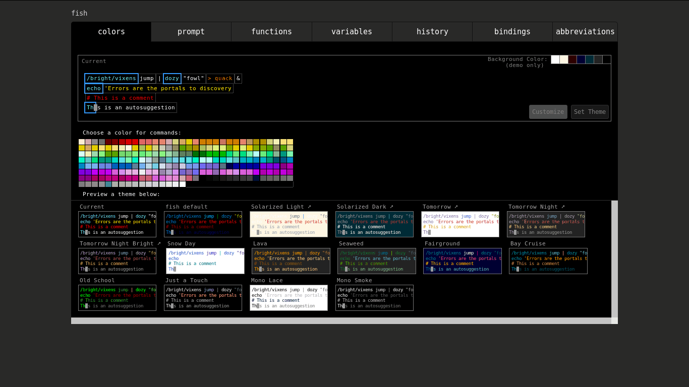
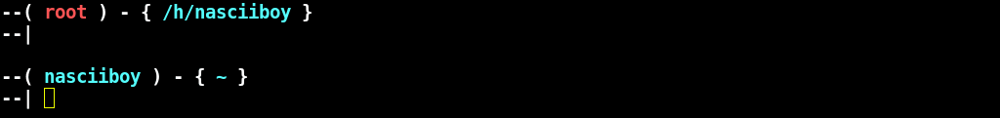

fish “El Shell de los 90s”, es un shell como los son bash o zsh. Esta programado en C++ y se distribuye con la licencia GNU GPL version 2.
Segun su pagina tiene autocompletado, autosugerencias, colores VGA, se puede configurar con una interfaz web, todo funciona sin necesidad de mover nada y sus scripts son los mas bonitos del barrio… MENTIRA todos los scripts de shell son feos
como? cambiar bash
dialogo interno
luego de aprender lo basico de
bash(que ya funciona y lo hace bien) pasar a utilizar un shell que programa gente salida no se donde solo porque tiene colorines… ja, ja, ja… ni muerto, solo probare, para confirmar su inferioridad… mierda, tiene autosugerencias/autocompletado automagico sin configurar nada
y asi es como pase a utilizar fish y bash dejo de ser suficiente.
Son mas bonitos los scripts fish? No.
Tiene tantos adeptos como bash? No.
Una interfaz de configuracion web es mejor? No.
Los colores de resaltado son mas llamativos? No, pero se pueden configurar.
El autocompletado/autosugerencias son perfectos? No, y sin embargo ya no puedo vivir sin esto…
instalacion
$ su
$ gestor-de-paquetes install fish
sin dejar el modo root revisa si fish se agrego a la “lista de shells”
$ cat /etc/shells
de no encontrarse una linea que termine con fish ejecuta
$ whereis fish
fish: /usr/bin/fish /etc/fish /usr/share/fish /usr/share/man/man1/fish.1.gz
acorde a la buenas costumbres fish esta en /usr/bin/. Agregamos la ruta
a la lista de shells
$ echo "/usr/bin/fish" >> /etc/shells
ahora cambiamos la shell por defecto
$ chsh
Cambiando intérprete de órdenes para nasciiboy.
Nuevo intérprete de órdenes [/usr/bin/bash]: /usr/bin/fish
$ exit
si tenemos un terminal grafico, quiza sea necesario configurar el cambio (proceda segun el caso).
Ejecutamos fish, o abrimos una nueva secion y optenemos esto
Welcome to fish, the friendly interactive shell
Type help for instructions on how to use fish
you@hostname ~>
si ejecutamos help optenemos la documentacion en una pestaña del navegador por
defecto… claro siempre que estes en modo grafico de lo contrario
optendras un error…
configuracion
si ejecutomos fish_config se abrira una intefaz web (en el navegador web por
defecto) donde podemos configurar el tema, el prompt y demas

si bien no esta aconsejado, podemos hacer lo mismo a mano con nuestro editor de
confianza la ruta es ~/.config/fish/.
La configuracion basica (equivalente al ~/.bashrc) esta en config.fish. Esta es
la configuracion de nasciiboy
set -g -x fish_greeting '' # elimina el mensaje de inicio
set --export GOPATH /home/nasciiboy/go # asi configuras una variable
set --export PATH $GOPATH/bin $PATH # asi agregas una ruta al PATH
set --export EDITOR "emacs -nw" # con esto se establece el editor
# screenfetch -D debian # esto es un comentario comentado
el prompt se establece en la carpeta functions en el fichero
fish_prompt.fish
function fish_prompt
set_color -o fff
printf '--( '
switch (whoami)
case nasciiboy
set_color cyan
case root
set_color red
case '*'
set_color yellow
end
printf "%s" (whoami)
set_color fff
printf ' ) - { '
set_color 54ffff
printf '%s' (prompt_pwd)
set_color fff
printf " }\n--| "
set_color normal
end
esto genera este prompt

para terminar el esquema de color y los alias se encuentran el el fichero
fishd.localhost.localdomain el localdomain puede ser tu local domain en mi
caso localnasciiboy
# This file is automatically generated by the fish.
# Do NOT edit it directly, your changes will be overwritten.
SET __fish_classic_git_prompt_initialized:\x1d
SET __fish_init_1_50_0:\x1d
SET __fish_init_2_3_0:\x1d
SET fish_color_autosuggestion:ffffff
SET fish_color_command:5fffff
SET fish_color_comment:ff0000
SET fish_color_cwd:green
SET fish_color_cwd_root:red
SET fish_color_end:ffffff
SET fish_color_error:ffff00
SET fish_color_escape:cyan
SET fish_color_history_current:cyan
SET fish_color_host:normal
SET fish_color_match:cyan
SET fish_color_normal:normal
SET fish_color_operator:cyan
SET fish_color_param:ffffff
SET fish_color_quote:ffffff
SET fish_color_redirection:ff5f00
SET fish_color_search_match:\x2d\x2dbackground\x3dpurple
SET fish_color_selection:\x2d\x2dbackground\x3dpurple
SET fish_color_status:red
SET fish_color_user:green
SET fish_color_valid_path:\x2d\x2dunderline
SET fish_greeting:Welcome\x20to\x20fish\x2c\x20the\x20friendly\x20interactive\x20shell\x0aType\x20\x1b\x5b32mhelp\x1b\x5b30m\x1b\x28B\x1b\x5bm\x20for\x20instructions\x20on\x20how\x20to\x20use\x20fish
SET fish_key_bindings:fish_default_key_bindings
SET fish_pager_color_completion:normal
SET fish_pager_color_description:555\x1eyellow
SET fish_pager_color_prefix:cyan
SET fish_pager_color_progress:cyan
SET fish_user_abbreviations:\x2b\x2b\x20ls\x20\x2dFalh\x20\x2d\x2dcolor\x3dauto\x1e\x2b\x20ls\x20\x2dF\x20\x2d\x2dcolor\x3dauto\x1e\u00e7\x20mocp
tengo tres alias
"+" para "ls -F --color=auto"
"++" para "ls -Falh --color=auto"
"ç" para "mocp"
he probado la configuracion en varios sistemas y para root, ha funcionado sin inconvenientes
detalles
la mayoria de atajos de bash sirven en fish, tambien se pueden personalizar a exepcion de uno muy importante Ctrl-r (revizar el historial). fish soluciona esto de una forma mas elegante: siempre estas en el historial, con Ctrl-P/flecha-arriba para anterior, Ctrl-N/flecha-abajo para siguiente
quiza lo que menos me gusta de fish es su manera de ejecutar una tarea si la anterir se realiza. En bash es
$ comando-1 && comando-2
en fish es
$ comando-1; and comando-2
Manipular scrips fish en emacs
sencillo instalamos el paquete fish-mode
Mediante melpa
M-x package-install fish-mode
Manualmente
git clone https://github.com/wwwjfy/emacs-fish.git
y luego, dentro de emacs cargamos el paquete con:
(load-file "/RUTA/A/REPOSITORIO/emacs-fish/fish-mode.el")
Para que el cambio sea permanente agregamos la enterior linea a init.el